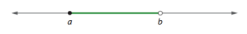
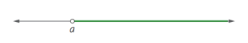
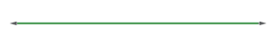

Um conjunto é um agrupamento/junção de elementos que podem ser classificados de acordo com suas características, por exemplo: conjunto de letras, números, canetas, etc.
Neste conteúdo, estudaremos sobre os conjuntos numéricos.
Sinais importantes:
O conjunto dos números naturais é formado pelos algarismos 0, 1, 2, 3, 4, 5, 6, 7, 8, 9,...
Representação
ℕ= {0, 1, 2, 3, 4, 5, 6, 7…}
O subconjunto dos números naturais pode ser representado da seguinte forma:
O asterisco que vemos ao lado do ℕ mostra que o 0 não está presente nesse conjunto, ou seja, foi excluído.
O conjunto dos números inteiros é formado por: ...,-3, -2, -1, 0, 1, 2, 3,…
Representação
ℤ= {...,-3, -2, -1, 0, 1, 2, 3,...}
Os subconjuntos de ℤ podem ser escritos da seguinte forma:
obs: Podemos dizer que ℤ+ = ℕ, já que os dois contém os mesmos elementos.
Números opostos ou simétricos são aqueles que estão a mesma distância de 0 (origem).
O conjunto de números racionais é formado por todos os números que podem ser escritos em formato de fração, seja positiva ou negativa (lembrando que o denominador precisa necessariamente ser diferente de 0).
ℚ = {x | x = a/b, com a ∈ ℤ, b ∈ ℤ e b ≠ 0 }
As frações do conjunto dos números racionais seguem uma repetição, ou seja, podemos chamá-los de dízima periódica.
Mas o que é uma dízima periódica?
Dízima periódica É um número que tem sua parte decimal infinita, a qual a partir de certo momento tem seus algarismos repetidos.
Exemplos:
Existem duas classificações para as dízimas periódicas:
Quando o período é formado pela parte decimal.
Quando além do período, a parte decimal contém um “intruso” (um algarismo que não está no período, ou seja, não se repete infinitamente).
Quando a parte inteira da dízima não for 0 basta repetir o procedimento anterior, mas ao invés do numerador ser o número do período, faremos o seguinte:
(exemplo retirado do vídeo DÍZIMA PERIÓDICA E FRAÇÃO GERATRIZ)
(exemplo retirado do vídeo DÍZIMA PERIÓDICA E FRAÇÃO GERATRIZ)
Quando a parte inteira não é zeroQuando a parte inteira da dízima não é 0, fazemos o mesmo processo acima, porém quando juntamos o intruso com o período precisamos adicionar também a parte inteira. Além disso, na hora de subtrair os números, ao invés de subtrairmos apenas o intruso devemos juntá-lo com a parte inteira para podermos realizar a subtração.
(exemplo retirado do vídeo DÍZIMA PERIÓDICA E FRAÇÃO GERATRIZ)
É importante ressaltar que essa é apenas uma das formas de realizar os cálculos de dízima periódica, existem outras, porém essa é a forma que acho mais fácil e me sinto mais confiante em fazer.
O número misto é uma forma de representar uma fração imprópria (aquelas onde o numerador é maior que o denominador, como ocorre muitas vezes nas dízimas periódicas).
Abaixo, podemos ver como fazemos para converter uma fração em número misto e vice-versa.
(imagem de autoria da professora, retirada do arquivo "MD2 - Conjuntos e Conjuntos Numéricos)
É formado por números que a parte decimal não forma um período.
É o conjunto formado pela união do conjunto dos números racionais com o conjunto dos números irracionais.
Foi criado para dar conta do números que não tinham solução no conjunto dos números reais.
A junção dos elementos de dois conjuntos é representada pelo símbolo ∪.
Podemos unir elementos que os dois conjuntos têm em comum ou elementos que estão apenas em um dos conjuntos.
A intersecção dos elementos de dois conjuntos é representada pelo símbolo ∩.
Podemos dizer que a intersecção é o que há de comum em dois conjuntos. Caso os conjuntos não tenham elementos em comum, podemos dizer que ele é um conjunto vazio, representado pelo símbolo ∅.
A diferença dos elementos de dois conjutnos é repersentada pelo símbolo -.
Podemos dizer que a diferença de dois conjuntos é dada pela anulação dos itens em comum, restando somente os elementos do primeiro conjunto. Caso não sobre nenhum elemento no primeiro conjunto, dizemos que ele é um conjunto vazio.
Sabemos que é impossível definir a quantidade de elementos existentes entre dois valores, isso se dá pelo fato deles serem infinitos. Para conseguirmos representar todos os números existentes entre um valor e outro, utilizamos a representação por forma dos intervalos reais.
Podemos identificar um intervalo aberto quando as boliinhas que indicam a posição de a e b não estão pintadas/brancas. Isso indica que a e b NÃO pertencem ao conjunto.
Representação do conjunto: {x ∈ ℝ| a < x < b}
Para identificarmos se um intervalo é fechado é preciso seguir a mesma lógica anterior, porém desta vez devemos perceber que as bolinhas são pintadas/pretas. Isso significa que a e b pertencem ao conjunto.

Representação do conjunto: {x ∈ ℝ| a ≤ x ≤ b}
Para saber qual lado do intervalo é aberto e qual é fechado é preciso observar qual bolinha representa a posição de cada um, assim como fizemos antes.
Vemos que a pertence ao conjunto, porém b não pertence.
Representação do conjunto: {x ∈ ℝ| a ≤ x < b}
Uma semirreta indica que existem infinitos números antes ou depois de certo valor, isso não é diferente nos intervalos reais. No exemplo abaixo, a semirreta indica que x > a.
Representação do conjunto: {x ∈ ℝ| x > a}
A reta real pode ser representada pelo conjunto dos números reais, já que ela engloba todos os números da reta.
Representação do conjunto: (-∞, +∞) ou ℝ
(todas as imagens acima foram retiradas do arquivo "MD2 - Conjuntos e Conjuntos Numéricos", disponibilizado no SIGAA pela professora)
Tive muita facilidade nesse conteúdo, minha única dificuldade foi entender a parte de dízima periódica, mas para conseguir compreender melhor assisti videoaulas e realizei exercícios, o que pra mim é algo que ajuda muito, e quando comecei a entender tive mais vontade de fazer exercícios assim. Tirando essa dificuldade que tive gostei muito do conteúdo, principalmente a parte de operações entre conjuntos.
Ir para o próximo conteúdo